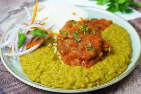

La alverjita partida es un plato tradicional y emblemático de la cocina casera peruana, valorado por su alto contenido nutricional (hierro, proteínas, fibra) y su papel en la seguridad alimentaria. Consiste en un guiso reconfortante elaborado con alverjas secas, ajo, cebolla, tocino y hierbas, comúnmente servido con arroz blanco